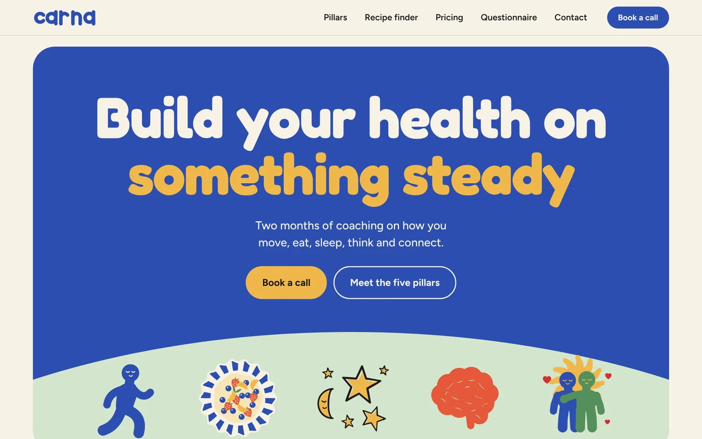

Research-driven product builder
I turn complex problems into simple, useful tools.
I start with the problem, not the code. I research the domain, work out what would actually help, and build working software with AI-assisted development, from a recipe database to a job-search system.
Selected projects
All projects
Research-driven tools that help people make better decisions about nutrition, exercise and everyday health, built on a recipe database and evidence-based rules.
Explore ProjectApplication tracker view
A job-search management system that organizes opportunities, generates tailored CVs, and tracks application progress and responses.
Explore ProjectOccupation analysis view
A platform that identifies workplace skills, maps where AI can help, and connects people with relevant learning and practical exercises.
Explore ProjectHow I work
From problem to product.
Most of the work happens before anything is built. The building goes faster because of it.
-
Investigate
Understand the problem, the people who have it, the context they work in, and what they already use to cope.
-
Research
Gather the evidence: studies, datasets, standards and domain knowledge, then decide which of it should shape the product.
-
Design
Turn findings into rules, workflows and requirements, and choose the simplest interface that does the job well.
-
Build
Develop a working tool with modern technologies and AI-assisted development, then test it, use it and keep refining it.
What I build
Problems I can help with.
Custom tools & internal software
Small, focused applications for a specific job your team does every week, shaped around how the work actually happens.
Workflow automation
Connecting forms, spreadsheets and databases so information moves on its own and repetitive admin stops eating your time.
Research-driven applications
Tools that turn a body of evidence, a standard or a dataset into clear recommendations people can act on.
AI-powered solutions
Using AI where it genuinely helps, such as classifying, summarizing or drafting, inside a workflow people already understand.
Have a problem worth solving?
Tell me about the task that takes too long or the idea you want to test. I'll tell you honestly whether a tool would help.